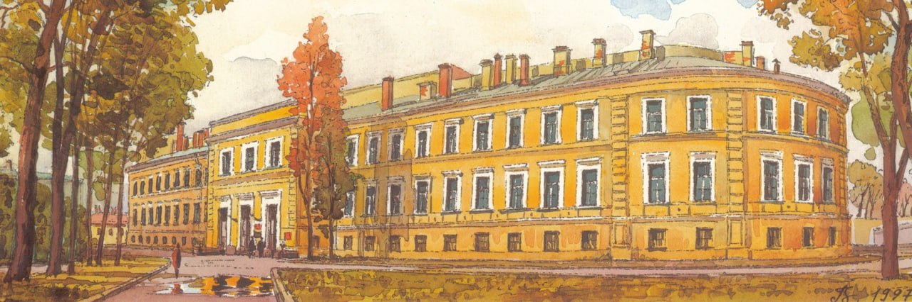
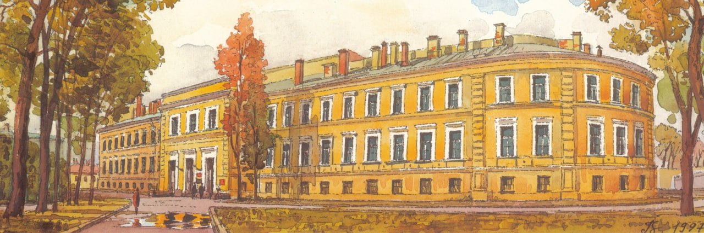

Кафедра Общей и экспериментальной патологии Императорской медико-хирургической академии учреждена решением Конференции Академии от 25 марта 1878 г. По материальной базе научных исследований и экспериментальных учебных демонстраций кафедра была одной из лучших в Европе.
Первым начальником кафедры был Пашутин Виктор Васильевич (1845–1901). Тайный советник, доктор медицины, профессор, академик Императорской медико-хирургической академии. Президент Императорской военно-медицинской академии (1890–1901).
После окончания ИМХА (1868) В.В. Пашутин был оставлен при академии для усовершенствования (1868–1871). В этот период выполнил диссертацию доктора медицины на тему: «Некоторые опыты над ферментами, превращающими крахмал и сахар в глюкозу» (1870).
В 1879 году назначен первым ординарным профессором по кафедре общей и экспериментальной патологии Императорской медико-хирургической академии, руководил этой кафедрой до избрания его Президентом Императорской военно-медицинской академии в 1890 году.
Результатом педагогической деятельности В.В. Пашутина явилось издание фундаментального руководства «Лекции общей патологии (патологической физиологии)» и «Курса общей и экспериментальной патологии».
После Пашутина В.В. начальником кафедры стал его ученик Альбицкий Петр Михайлович (1853–1922). Статский советник, доктор медицины, профессор, академик Императорской Военно-медицинской академии.
Профессор П.М. Альбицкий совмещал заведование кафедрой и принимал активное участие в становлении и совершенствовании женского высшего медицинского образования.
В 1912 г. начальником кафедры был назначен Коренчевский Владимир Георгиевич (1880–1957). Статский советник, доктор медицины, профессор.
Следующий этап развития кафедры связан с именем академика Аничкова Николая Николаевича (1885–1964).
В 1912 г. защитил диссертацию на степень доктора медицины «Воспалительные изменения миокарда», за которую удостоен премии им. М.М. Руднева. Совместно С.С. Халатовым экспериментально открыл и сформулировал основные положения теории атеросклероза. В 1928 г. он опубликовал первый в СССР учебник по патологической физиологии, выдержавший 7 изданий.
В 1939 г. кафедру патологической физиологии возглавил Петров Иоаким Романович (1893–1970). В период Великой Отечественной войны служил на Северо-Западном фронте. И.Р. Петров внес в 1942 г. в инструкцию ГВСУ по лечению шока основные принципы современной терапии. Результаты исследования во время Великой Отечественной войны послужили основой для разработки принципа комплексной терапии и профилактики шока.
При Викторе Константиновиче Кулагине (1923–1982), который руководил кафедрой с 1967 по 1980 год, акцент научных исследований был сделан на разработке ранней профилактики и терапии травматического шока.
Клинической патофизиологии, новому направлению в деятельности кафедры, была посвящена работа профессора Шанина Юрия Николаевича, который руководил кафедрой с 1980 по 1989 гг. Является основателем отечественной клинической патофизиологии. В период этого исторического периода на кафедре проводились работы по изучению патогенеза легких ранений и травм, разработаны рекомендации по их лечению в соответствии с типологическими особенностями пострадавших; раскрыт патогенез раневой болезни с позиции теории функциональных систем.
Профессор Насокин Олег Сергеевич руководил кафедрой с 1988 по 1993 год. Научные исследования руководимой им кафедры были посвящены изучению периода реабилитации травматической болезни, нейрофизиологическим механизмам выключения двигательной активности и механизмам аутогемоделюции при шоке.
С 1993 по 2008 г. кафедрой руководил профессор Шанин Всеволод Юрьевич, являвшийся до этого ведущим анестезиологом 40-й армии в Афганистане. В этот период на кафедре выходят руководства «Общая патология боевой травмы» (1994) и «Клиническая патофизиология тяжелых ранений и травм» (1995)., монографии «Теория и практика анестезии и интенсивной терапии при тяжелых ранениях и травмах» , «Клиническая патофизиология функциональных систем» (1997), учебники и учебные пособия: «Частная патофизиология» (1999), «Гипоксия» (2000), «Общая патофизиология» (2001), «Теория и практика антиоксидантной терапии» (2003), «Патофизиология критических состояний» (2003).


 
